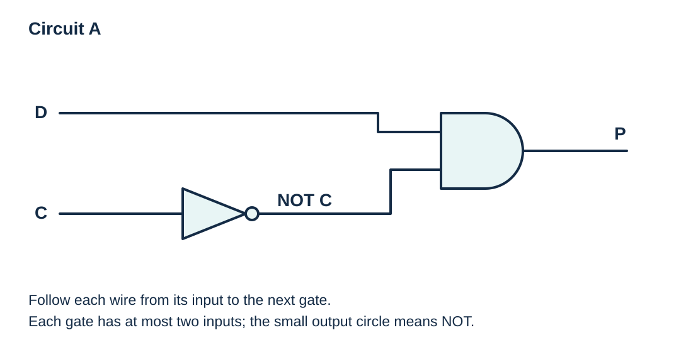

From a problem or expression to a circuit and table
Visual overview
Circuit A: permission rule

Visual transcript
- C passes through NOT before entering AND.
- D enters the other AND input; the final output is P.
Core explanation
Define variables and write the expression
Translate a problem statement by defining what the value 1 means for each variable. Write a logic expression with explicit NOT operations and brackets. A condition such as ‘both are off’ requires two inverted inputs combined with AND.
Construct the circuit
Construct the logic circuit from the innermost operations outward. Label intermediate wires and the final output. Use only two-input gates apart from NOT; a complete circuit may still have three or more independent inputs.
Check every input combination
To obtain the table from either the statement or the expression, list every input combination and calculate the intermediate and final values. Check the finished output column against the original condition, not just the expression you wrote.
Worked example · A door permission rule in four forms
- Problem
Permission P is granted only when a valid request D is present and the lock condition C is off.
- Expression and circuit
P = D AND NOT C. In Circuit A the inversion occurs before the AND operation.
- Complete table
D C | NOT C | P 0 0 | 1 | 0 0 1 | 0 | 0 1 0 | 1 | 1 1 1 | 0 | 0 - Statement check
The only permitted case has a valid request and no lock condition.